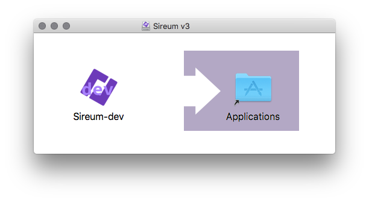

Logika runs on x64 macOS, Linux, and Windows operating systems (tested on macOS 10.12, Manjaro, Ubuntu 16.04, and Windows 10).
There two ways one can install Logika: Using Sireum v3 Binary Distribution or Using Sireum v3 Source Distribution.
Video Tutorials: (1) Installing Sireum IVE in Windows, and (2) Verifying Logika Examples using Sireum IVE
There are two kinds of Sireum v3 binary distributions: (1) Sireum Integrated Verification Environment (IVE), and (2) Sireum Command-Line Interface (CLI). Sireum IVE includes a custom IntelliJ IDEA Community Edition with various plugins installed, along with the Sireum CLI.
In addition to the regular Release builds, we also provide Development builds for trying out Sireum v3 experimental features.
Execute the following in a bash terminal:
curl -JLo sireum-v3-ive-mac64.dmg http://bit.ly/sv3ivem && open sireum-v3-ive-mac64.dmg
|
Once it is done, it should open a new window:
Drag and drop the Sireum icon to the Applications folder.
(Note: the above avoids GateKeeper;
if it is instead downloaded using a browser,
you need to remove Apple’s quarantine extended attribute on the .dmg file before opening it as follows:
xattr -d com.apple.quarantine sireum-v3-ive-mac64.dmg).
For subsequent instructions, replace SIREUM_HOME with /Applications/Sireum.app/Contents/Resources/sireum-v3.
To run Sireum IVE, double-click Sireum inside /Applications (or, in a terminal: open /Applications/Sireum.app).
To run Sireum CLI in a terminal: SIREUM_HOME/sireum.
Minisign: http://bit.ly/sv3ivems
Download from: http://bit.ly/sv3ivel
Uncompress it in a folder whose path does not contain a whitespace such as /opt
(or ~/Applications, if your home directory path does not contain a whitespace).
For subsequent instructions, replace SIREUM_HOME with /opt/Sireum (or ~/Applications/Sireum).
To run Sireum IVE in a terminal: SIREUM_HOME/idea.
To run Sireum CLI in a terminal: SIREUM_HOME/sireum.
Minisign: http://bit.ly/sv3ivels
Download from: http://bit.ly/sv3ivew
Uncompress it to the C: drive root directory (i.e., C:\) so the file C:\Sireum\sireum.bat is present.
For subsequent instructions, replace SIREUM_HOME with C:\Sireum.
To run Sireum IVE:
double-click, either:
32-bit: SIREUM_HOME\apps\idea\bin\idea.exe, or
64-bit: SIREUM_HOME\apps\idea\bin\idea64.exe
This requires Java 8 64-bit, which is available in SIREUM_HOME\platform\java;
to use that, add SIREUM_HOME\platform\java\bin to your PATH environment variable.
in a terminal: SIREUM_HOME\idea.bat or SIREUM_HOME\idea64.bat.
To run Sireum CLI in a terminal: SIREUM_HOME\sireum.bat
Minisign: http://bit.ly/sv3ivews
Download from: http://bit.ly/sv3clim
Uncompress it in a folder whose path does not contain a whitespace such as /opt
(or ~/Applications, if your home directory path does not contain a whitespace).
For subsequent instructions, replace SIREUM_HOME with /opt/sireum-v3 (or ~/Applications/sireum-v3).
To run Sireum CLI in a terminal: SIREUM_HOME/sireum.
Minisign: http://bit.ly/sv3clims
Download from: http://bit.ly/sv3clil
Uncompress it in a folder whose path does not contain a whitespace such as /opt
(or ~/Applications, if your home directory path does not contain a whitespace).
For subsequent instructions, replace SIREUM_HOME with /opt/sireum-v3 (or ~/Applications/sireum-v3).
To run Sireum CLI in a terminal: SIREUM_HOME/sireum.
Minisign: http://bit.ly/sv3clils
Download from: http://bit.ly/sv3cliw
Uncompress it to the C: drive root directory (i.e., C:\) so the file C:\sireum-v3\sireum.bat is present.
For subsequent instructions, replace SIREUM_HOME with C:\sireum-v3.
To run Sireum CLI in a terminal: SIREUM_HOME\sireum.bat.
Minisign: http://bit.ly/sv3cliws
Execute the following in a bash terminal:
curl -JLo sireum-v3-dev-ive-mac64.dmg http://bit.ly/sv3divem && open sireum-v3-dev-ive-mac64.dmg
|
Once it is done, it should open a new window:
Drag and drop the Sireum-dev icon to the Applications folder.
(Note: the above avoids GateKeeper;
if it is instead downloaded using a browser,
you need to remove Apple’s quarantine extended attribute on the .dmg file before opening it as follows:
xattr -d com.apple.quarantine sireum-v3-dev-ive-mac64.dmg).
For subsequent instructions, replace SIREUM_HOME with /Applications/Sireum-dev.app/Contents/Resources/sireum-v3-dev.
To run Sireum IVE, double-click Sireum-dev inside /Applications (or, in a terminal: open /Applications/Sireum-dev.app).
To run Sireum CLI in a terminal: SIREUM_HOME/sireum.
Minisign: http://bit.ly/sv3divems
Download from: http://bit.ly/sv3divel
Uncompress it in a folder whose path does not contain a whitespace such as /opt
(or ~/Applications, if your home directory path does not contain a whitespace).
For subsequent instructions, replace SIREUM_HOME with /opt/Sireum-dev (or ~/Applications/Sireum-dev).
To run Sireum IVE in a terminal: SIREUM_HOME/idea.
To run Sireum CLI in a terminal: SIREUM_HOME/sireum.
Minisign: http://bit.ly/sv3divels
Download from: http://bit.ly/sv3divew
Uncompress it to the C: drive root directory (i.e., C:\) so the file C:\Sireum-dev\sireum.bat is present.
For subsequent instructions, replace SIREUM_HOME with C:\Sireum-dev.
To run Sireum IVE:
double-click, either:
32-bit: SIREUM_HOME\apps\idea\bin\idea.exe, or
64-bit: SIREUM_HOME\apps\idea\bin\idea64.exe
This requires Java 8 64-bit, which is available in SIREUM_HOME\platform\java;
to use that, add SIREUM_HOME\platform\java\bin to your PATH environment variable.
in a terminal: SIREUM_HOME\idea.bat or SIREUM_HOME\idea64.bat.
To run Sireum CLI in a terminal: SIREUM_HOME\sireum.bat
Minisign: http://bit.ly/sv3divews
Download from: http://bit.ly/sv3dclim
Uncompress it in a folder whose path does not contain a whitespace such as /opt
(or ~/Applications, if your home directory path does not contain a whitespace).
For subsequent instructions, replace SIREUM_HOME with /opt/sireum-v3-dev (or ~/Applications/sireum-v3-dev).
To run Sireum CLI in a terminal: SIREUM_HOME/sireum.
Minisign: http://bit.ly/sv3dclims
Download from: http://bit.ly/sv3dclil
Uncompress it in a folder whose path does not contain a whitespace such as /opt
(or ~/Applications, if your home directory path does not contain a whitespace).
For subsequent instructions, replace SIREUM_HOME with /opt/sireum-v3-dev (or ~/Applications/sireum-v3-dev).
To run Sireum CLI in a terminal: SIREUM_HOME/sireum.
Minisign: http://bit.ly/sv3dclils
Download from: http://bit.ly/sv3dcliw
Uncompress it to the C: drive root directory (i.e., C:\) so the file C:\sireum-v3-dev\sireum.bat is present.
For subsequent instructions, replace SIREUM_HOME with C:\sireum-v3-dev.
To run Sireum CLI in a terminal: SIREUM_HOME\sireum.bat.
Minisign: http://bit.ly/sv3dcliws
Note
Sireum v3 binary distributions that we provide are cryptographically-signed just in case you want to ensure that your copy is untampered (read more).
The accompanying Minisign digital signature can be verified using the following command:
minisign -P RWSJrtRxSDlkZHXVldw0WXJvSfzaEsW9R6vxq0sVKDtbmgzQSb4uOwnu -Vm <file>
|
Alternatively, you can use the following signify command:
signify -p sireum-v3-key.pub -x <file>.minisig -Vm <file>
where |
To run Logika:
Under macOS or Linux:
SIREUM_HOME/sireum logika
Under Windows:
SIREUM_HOME\sireum logika
Logika will display its usage information:
Sireum Logika:
A Program Verifier and A Natural Deduction Proof Checker
... for Propositional, Predicate, and Programming Logics
Usage: sireum logika [option] <filename-1> ... <filename-N>
Options:
-f, --formula Formula/sequent matching the truth table/logic input file's
--server Enable server mode
-h, --help Display usage information
Programming Logic Options:
-a, --auto Enable auto mode
-b, --bitwidth Default integer bit-width for symbolic execution & translation
Default: 0
-l, --last Check last program only
-t, --timeout Timeout for algebra and auto (in milliseconds)
Default: 2000
-x, --symexe Enable symbolic execution
--c File/directory path for C translation
--compare Compare well-formed input program files (sans contracts/prints)
--run Run input program file(s)
--sat Enable sat checking of facts and contracts
Symbol Conversion Options:
--ascii Convert to ASCII
--unicode Convert to Unicode
(Please refer to Logika Command-Line Configuration for descriptions on the above option switches.)
Note
For the remainder of this document, we use LOGIKA as a shorthand for
the Logika command above.
In addition, replace / with \ when entering paths in
a Windows shell/command prompt.
To update Logika, simply re-download/install/replace according to the above instructions.
Next, see Verifying Examples using Sireum CLI.
On all systems, the following tools are required:
git, bash, unzip, wget.
On macOS, you can install wget using:
These tools are available on most Linux distributions either by default or through the distribution package manager.
To install Logika, enter the following commands under bash
(in a directory whose path does not contain whitespaces):
git clone https://github.com/sireum/v3.git sireum-v3
sireum-v3/sireum logika
The first command clones the Sireum v3 Git repository
locally to a directory named sireum-v3,
and the second command runs Sireum Logika from the local repository.
If this is your first time running Logika, it first downloads some software that it depends on, and then builds and assembles itself. If the build somehow fails, please see [troubleshooting](https://github.com/sireum/v3#troubleshooting).
The process may take a while depending on your internet connection speed and your machine’s computational prowess.
When it finishes, Logika will display its usage information:
Sireum Logika:
A Program Verifier and A Natural Deduction Proof Checker
... for Propositional, Predicate, and Programming Logics
Usage: sireum logika [option] <filename-1> ... <filename-N>
Options:
-f, --formula Formula/sequent matching the truth table/logic input file's
--server Enable server mode
-h, --help Display usage information
Programming Logic Options:
-a, --auto Enable auto mode
-b, --bitwidth Default integer bit-width for symbolic execution & translation
Default: 0
-l, --last Check last program only
-t, --timeout Timeout for algebra and auto (in milliseconds)
Default: 2000
-x, --symexe Enable symbolic execution
--c File/directory path for C translation
--compare Compare well-formed input program files (sans contracts/prints)
--run Run input program file(s)
--sat Enable sat checking of facts and contracts
Symbol Conversion Options:
--ascii Convert to ASCII
--unicode Convert to Unicode
(Please refer to Logika Command-Line Configuration for descriptions on the above option switches.)
Note
For the remainder of this document, we use LOGIKA as a shorthand for
sireum-v3/sireum logika.
To get updates, simply do a git pull inside sireum-v3 and run Logika again:
cd sireum-v3
git pull
LOGIKA
Some Logika examples are available at https://github.com/sireum/v3-logika-examples
There are two ways to retrieve the examples:
Using git
Clone the repository to try out some of the examples:
git clone https://github.com/sireum/v3-logika-examples.git logika-examples
Downloading the zip file
Uncompress it and rename v3-logika-examples-master to logika-examples.
Then run Logika on, e.g., logika-examples/src/propositional/intro-nat-ded.logika,
whose content is as follows:
p ∨ q, r ⊢ (p ∧ r) ∨ (q ∧ r)
{
1. p ∨ q premise
2. r premise
3. {
4. p assume
5. p ∧ r ∧i 4 2
6. (p ∧ r) ∨ (q ∧ r) ∨i1 5
}
7. {
8. q assume
9. q ∧ r ∧i 8 2
10. (p ∧ r) ∨ (q ∧ r) ∨i2 9
}
11. (p ∧ r) ∨ (q ∧ r) ∨e 1 3 7
}
using the following command:
LOGIKA logika-examples/src/propositional/intro-nat-ded.logika
which will show:
Propositional logic proof is accepted.
If one introduced a typo in the proof, such as using ∨i1 instead of ∨i2 in step #10 in the above example, Logika will instead output:
[13, 11] The disjunction's left sub-expression in step #10 does not match #9 for Or-intro1.
Propositional logic proof is rejected.
One can specify the sequent to prove as a command line to ensure that the proof in the file is the one that is expected as follows (if you introduced the typo, revert it back first):
LOGIKA -s "¬(¬p ∨ ¬q) ⊢ p ∧ q" logika-examples/src/propositional/intro-nat-ded.logika
If the provided sequent is different than the one in the file, the tool rejects it. For example:
LOGIKA -s "p, q ⊢ p ∧ q" logika-examples/src/propositional/intro-nat-ded.logika
will result:
The specified sequent is different than the one in the file.
Specified:
p, q ⊢ p ∧ q
File:
p ∨ q, r ⊢ (p ∧ r) ∨ (q ∧ r)
For a better experience, consider using the Sireum IVE’s IntelliJ-based Logika Integrated Verification Environment (LIVE).
Logika automatically detects which logic input it is being asked to check; thus, there is no configuration switch needed for it.
Command-Line Option: -a or --auto.
The auto mode enables claim justifications using the auto summoning. It also enables Logika to try to automatically prove contracts (e.g., assertions, pre/post-conditions, invariants) and runtime error checks (e.g., division by zero, sequence indexing).
An error message is produced when the auto tactic is used without enabling this mode. Moreover, Logika will produce an error message if it cannot automatically prove a contract or a runtime error check (in which case, one can increase the timeout for automatic proving, or guide Logika by establishing more claims to help with making the necessary deduction).
Furthermore, auto mode changes the way proof statement works. By default, a proof statement only propagates the proven claims inside that statement. This essentially resets the premises that are available for the next statement to only what the proof statement has proven. If auto is enabled, proof statements also propagate their premises along with their proven claims. For more information with examples, please refer to the proof statement section.
Command-Line Option: -f or --formula, followed by the formula or sequent string to check.
The formula option is use to provide the formula (as the following string argument to the option switch) that a file should provide a truth table or a proof for. This provides a redundancy check at the command-line level to ensure some sort of consistency.
Command-Line Option: -l or --last.
Logika supports checking multiple files at the same time.
For propositional/predicate logics, it treats each file as a separate proof.
For programming logic, it treats the specified input files as one input appended together in order. When last mode is enabled, it only checks the proof of the last specified file (note that it still, for example, type checks all the files). This is handy for proof management by separating a program of a system into multiple files.
Command-Line Option: -t or --timeout, followed by the timeout integer (non-positive means unbounded).
Logika uses the Z3 theorem prover to automatically prove some formulae (e.g., arithmetic). In some cases, Z3 might take a long time, thus, the timeout option specifies how long Z3 can spend to prove a claim.
Command-Line Option: --sat
If enabled, Logika will check the satisfiability of contracts and facts (axioms) to ensure that the system is implementable (or not broken by assuming untrue facts).
Command-Line Option: -x or --symexe.
This mode enables a more automated verification technique called symbolic execution (summarizing, i.e., it is compositional and it requires loop invariants). Many program contracts can be proved using symbolic execution; manual proof steps can be provided in cases where the contracts cannot be proved automatically.
Command-Line Option: -b or --bitwidth, followed by
either 0, 8, 16, 32, or 64.
By default, Logika uses arbitrary-precision (big) integer for
its integer (Z) type.
When supplied with a non-zero parameter in Symbolic Execution Mode,
say N, Logika uses the ranged integer from -2 N - 1
to 2 N -1 - 1 for Z where over/under-flows are checked.
Command-Line Option: --ascii and/or --unicode.
If supplied, the input files will be converted to use ASCII and/or Unicode
Logika symbols.
Logika will then create new files at the same directory as the input files
prefixed with ascii-/unicode-.
Command-Line Option: --c, followed by a directory or a file path.
If supplied, the input files will be translated to C along with supporting
header and source files, as well as a CMake file
(CMakeLists.txt).
To compile the generated C code, go to the directory under which the files are generated and execute:
cmake .
make
Command-Line Option: --server
The server mode puts Logika to accepts requests through its console input and responds through its console output. This is designed for integration with other tools such as the IntelliJ-based Logika Integrated Verification Environment (LIVE). Each request/respond message is in the (restricted) form of a line JSON serialization string whose schema are derived from the Scala case classes defined in the org.sireum.logika.message package; the actual serialization mechanisms are defined in InputMessageJson and OutputMessageJson.
Note
All other options are ignored when the server mode is enabled.